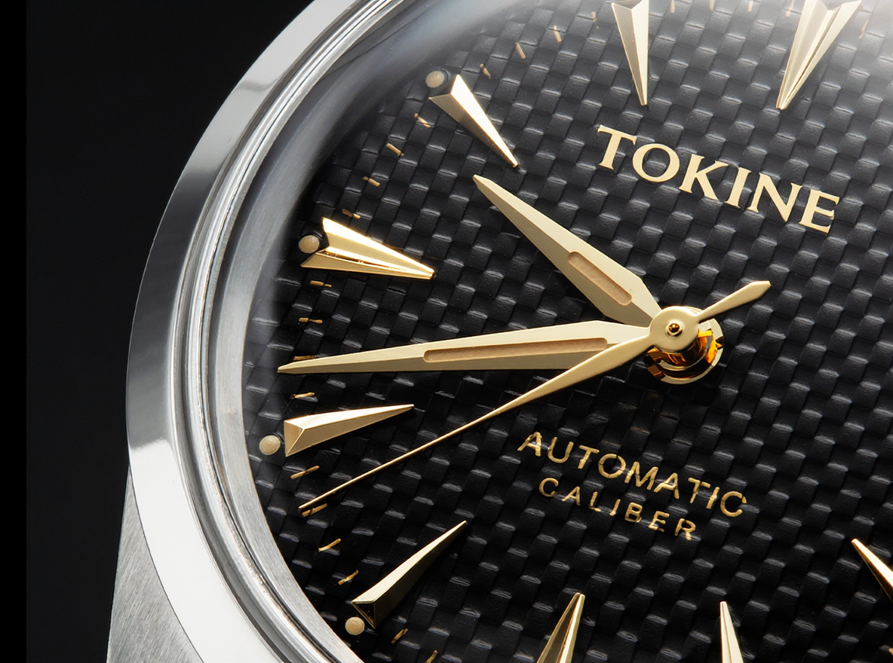

01
Checker Dial 市松文字盤
一枚の文字盤に刻んだ、立体的な市松模様。見る角度によって光を拾い、漆黒がその表情を変えていきます。

Concept
時計は、目で読むものではなく、
耳で感じるものだったのかもしれない。
深夜、静まり返った部屋に響く、かすかな鼓動。
一秒ごとに確かに進む、機械の呼吸。
刻音は、その一瞬一瞬の音を
かたちにするために生まれました。
“The sound of time, given form.”
Craftsmanship
01
一枚の文字盤に刻んだ、立体的な市松模様。見る角度によって光を拾い、漆黒がその表情を変えていきます。
02
一本ずつ多面カットを施したアプライドインデックス。わずかな光も鋭く跳ね返し、時を際立たせます。
03
中央に稜線を立てた二面仕上げの針。片面が光を受け、片面が影を落とす、そのコントラストが時刻を描きます。
04
歪みのない鏡面に仕上げた38mmケース。周囲の景色を静かに映し込み、腕元に奥行きを与えます。
Movement
腕の動きでローターが回り、ゼンマイを巻き上げる自動巻きムーブメント。毎時28,800振動のテンプが、一秒を八つに刻みます。
Specifications
Boutique Reservation
光の移ろい、針の運び、腕に載せたときの重さ。写真では伝えきれないすべてを、ブティックでご体感ください。専任のスタッフがご案内いたします。
刻音 銀座ブティック
東京都中央区銀座 ◯-◯-◯
11:00 – 20:00（水曜定休）